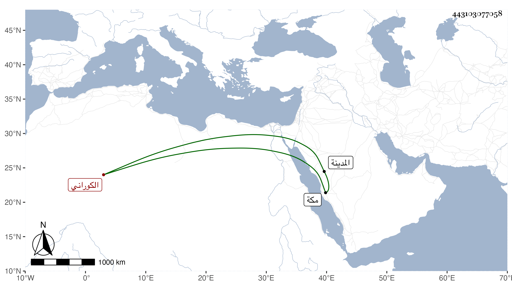

0902Sakhawi.DawLamic.ITO20230111-ara1.EIS1600.443103077058
Biography ID: 443103077058
958
سعيد بن محمود بن أبي بكر الكوراني الشهير بالكردي نزيل مكة ودلال الكتب بها . سمع على التقي بن فهد ، ورأيته في سنة إحدى وسبعين . مات في منتصف سنة اثنتين وسبعين بالمدينة الشريفة واتفق أنني شكوت له ونحن بالطواف ريحا في باطني فالتفت إلى الكعبة وقال اللهم اجعلها رياحا لاريحا فكانت مضحكة .
